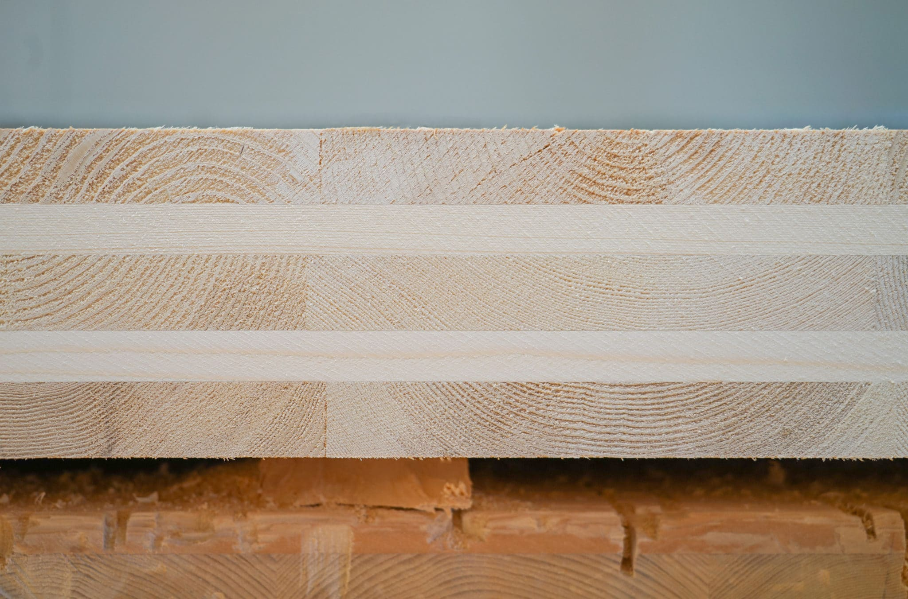
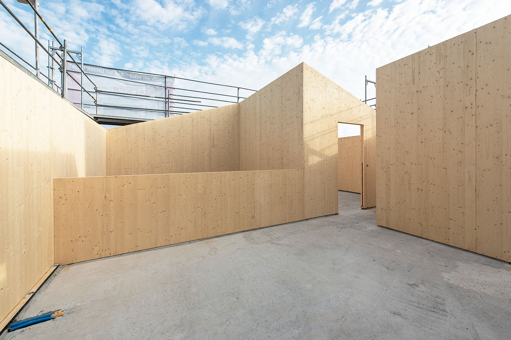
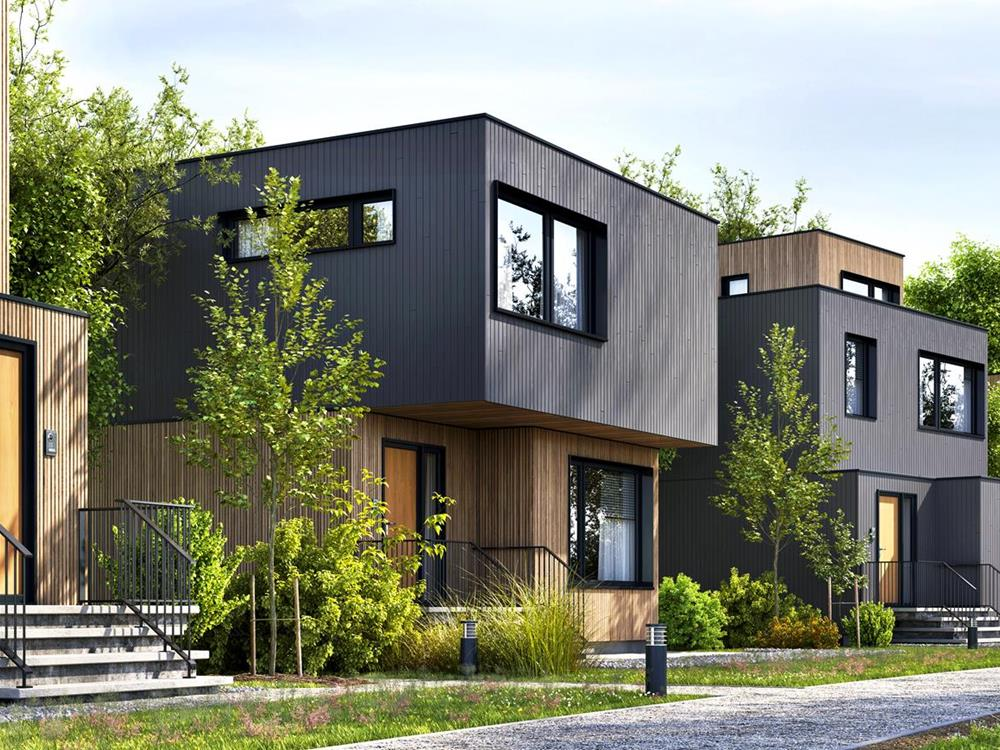

Architekt · Designierter Geschäftsführer PBRE
Daten bringen Klarheit. Mit selbst entwickelten Tools analysieren und visualisieren wir Grundstücke – für Entscheidungen, die auf Fakten statt Bauchgefühl basieren.
Vorfertigung verkürzt Bauzeiten,
senkt Kosten und erleichtert
die CO₂-Bilanzierung.
Brettsperrholz (CLT)
bringt diese Vorteile beispielsweise als ausgereiftes System
zusammen.
Material

System

Umsetzung
